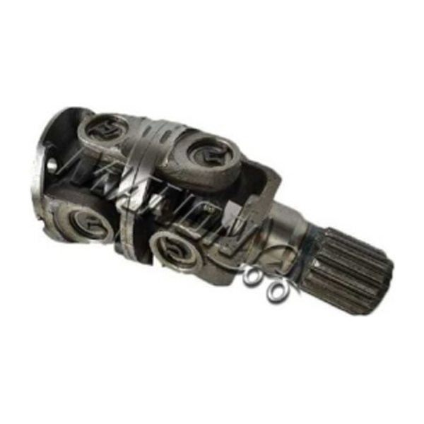

Parts › Transmission & Drive Axle › 25931-302

Available
Email for a quote
Daewoo 25931-302 Cardan
| OEM part number | 25931-302 |
| Fits | Daewoo |
| Models / notes | D20/30S-3 |
| Category | Transmission & Drive Axle |
| Type | Aftermarket replacement |
Send us the quantity you need and we'll reply with pricing, usually within 24 hours. Not the exact part? We can source it. Send the part number or a photo.